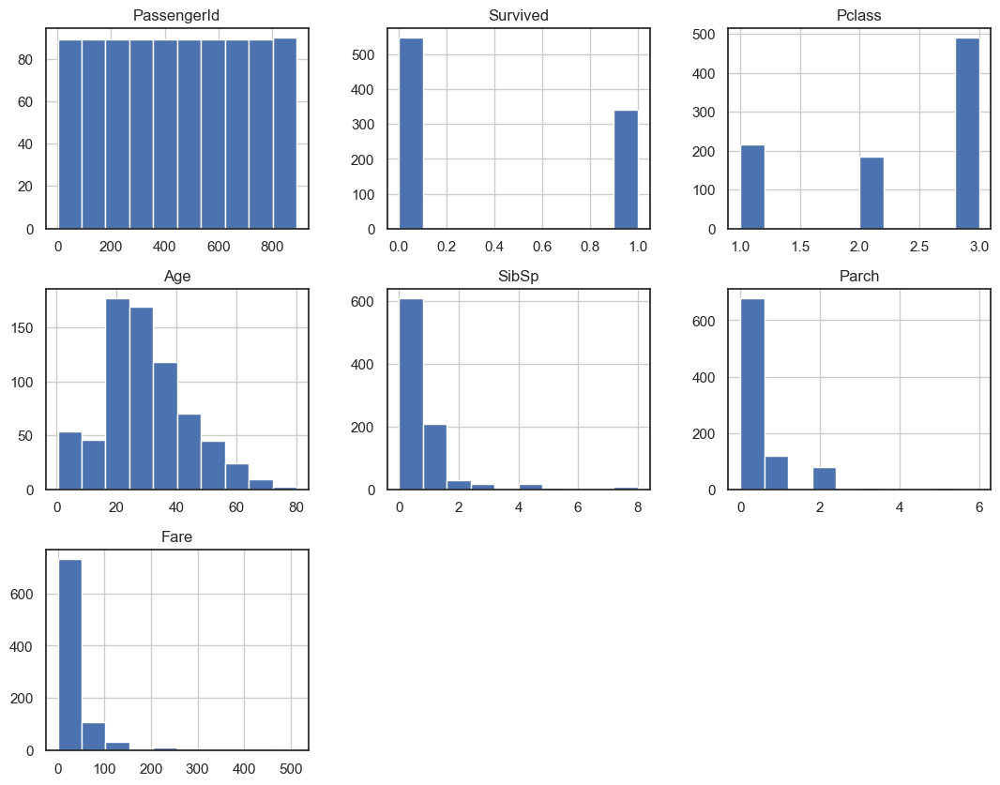
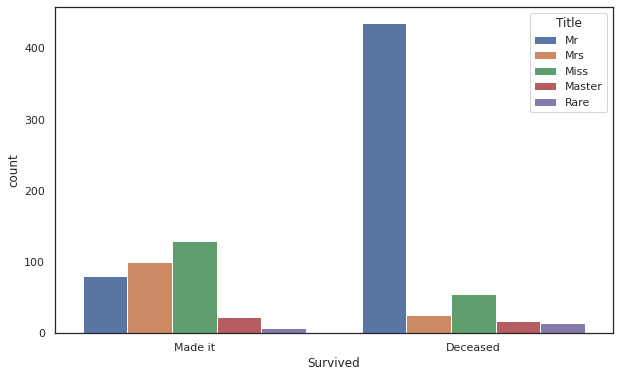
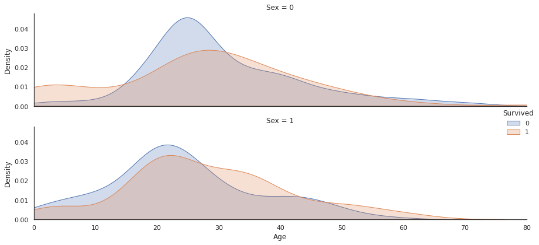
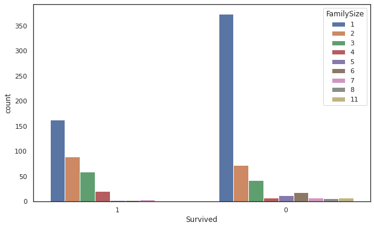
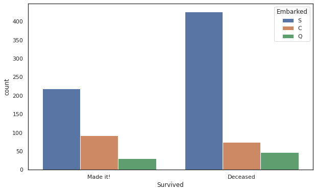
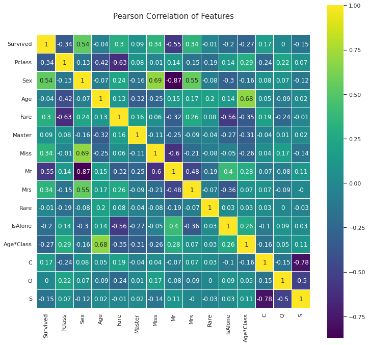
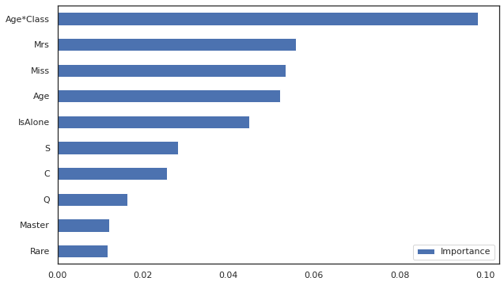

# No warnings
import warnings
warnings.filterwarnings('ignore') # Filter out warnings
# data analysis and wrangling
import pandas as pd
import numpy as np
# visualization
import matplotlib.pyplot as plt
%matplotlib inline
import seaborn as sns
# 7 machine learning models
from sklearn.linear_model import LogisticRegression
from sklearn.svm import SVC
from sklearn.ensemble import RandomForestClassifier
from sklearn.neighbors import KNeighborsClassifier
from sklearn.linear_model import Perceptron
from sklearn.tree import DecisionTreeClassifier
import xgboost as xgb
Titanic Survivor Analysis
Edits: Alexander-Fred Ojala, Kevin Li, and Elias Castro Hernandez
Sources: * Training + explanations: https://www.kaggle.com/c/titanic
What is the Value for your Organization
- By seeing acutal examples you’ll be empowered to ask the right questions (and get fair help from consultants, startups, or data analytics companies)
- This will help you make the correct decisions for your business
Demystify
This is a real world example of how you’d solve a Machine Learning prediciton problem
Common Machine Learning Use Cases in Companies: - Discover churn risk of customers - Predict optimal price levels (investments / retail) - Predict future revenues - Build recommendation systems - Customer value scoring - Fraud detection - Customer insights (characteristics) - Predict sentiment of text / client feedback - Object detecton in images - etc etc…
Why Python?
Python is general purpose and can do Software development, Web development, AI. Python has experienced incredible growth over the last couple of years.

Source: https://stackoverflow.blog/2017/09/06/incredible-growth-python/
Everything is free!
The best software today is open source and it’s also enterprise-ready. Anyone can download and use them for free (even for business purposes).
Examples of great, free AI libraries: * Anaconda * Google’s TensorFlow * Scikit-learn * Pandas * Keras * Matplotlib * SQL * Spark * Numpy
State-of-the-Art algorithms
No matter what algorithm you want to use (Linear Regression, Random Forests, Neural Networks, or Deep Learning), all of the latest methods are implemented optimized for Python.
Big Data
Python code can run on any computer. Therefore, you can scale your computations and utilize for example cloud resources to run big data jobs.
Great tools for Big Data: - Spark - Databricks - Hadoop / MapReduce - Kafka - Amazon EC2 - Amazon S3
Note on data collection
- Collect all the data you can! (storage is cheap)

Understanding the connections between passanger information and survival rate
The sinking of the RMS Titanic is one of the most infamous shipwrecks in history. On April 15, 1912, during her maiden voyage, the Titanic sank after colliding with an iceberg, killing 1502 out of 2224 passengers and crew. This sensational tragedy shocked the international community and led to better safety regulations for ships.
One of the reasons that the shipwreck led to such loss of life was that there were not enough lifeboats for the passengers and crew. Although there was some element of luck involved in surviving the sinking, some groups of people were more likely to survive than others, such as women, children, and the upper-class.
The data conists of passanger information for the maiden, and tragic, voyage of the Titanic ocean liner. The set is comprised of 1309 unique entries, each associated with information realated to a passanger. The set is broken is broken down to 891/418 (testing/training) split for the purposes of modeling
Our task is to train a machine learning model on the training set in order to predict if the passengers in the test set survived or not.
Part 0: Install Additional Required Software
__Note:__To follow along with notebook, you will need to install the xgboost package in your pyhton enviroment:
try (in terminal):
$ conda install py-xgboostor
try (directly in notebook)
!conda install py-xgboost --y___ ## Part 1: Import Packages + Libraries + Dependencies
Import packages
Styling and fancy distribution plot
# Plot styling and display options
sns.set(style='white', context='notebook', palette='deep')
plt.rcParams[ 'figure.figsize' ] = 10 , 6
pd.set_option('display.max_columns', 100) # Print 100 Pandas columns
# Special distribution plot (will be used later)
def plot_distribution( df , var , target , **kwargs ):
row = kwargs.get( 'row' , None )
col = kwargs.get( 'col' , None )
facet = sns.FacetGrid( df , hue=target , aspect=4 , row = row , col = col )
facet.map( sns.kdeplot , var , shade= True )
facet.set( xlim=( 0 , df[ var ].max() ) )
facet.add_legend()
plt.tight_layout()Load Data
train_df = pd.read_csv('https://raw.githubusercontent.com/afo/data-x-plaksha/master/05a-tools-titanic/data/train.csv')
test_df = pd.read_csv('https://raw.githubusercontent.com/afo/data-x-plaksha/master/05a-tools-titanic/data/test.csv')
combine = [train_df, test_df]
# combine is used to ensure whatever preprocessing is done on training data
# is also done on test data
# NOTE! When we change train_df or test_df the objects in combine
# will also change (combine is only a pointer to the objects)___ ## Part 2: Exploring and Preprocessing the Data Data descriptions

combine[1]| PassengerId | Pclass | Name | Sex | Age | SibSp | Parch | Ticket | Fare | Cabin | Embarked | |
|---|---|---|---|---|---|---|---|---|---|---|---|
| 0 | 892 | 3 | Kelly, Mr. James | male | 34.5 | 0 | 0 | 330911 | 7.8292 | NaN | Q |
| 1 | 893 | 3 | Wilkes, Mrs. James (Ellen Needs) | female | 47.0 | 1 | 0 | 363272 | 7.0000 | NaN | S |
| 2 | 894 | 2 | Myles, Mr. Thomas Francis | male | 62.0 | 0 | 0 | 240276 | 9.6875 | NaN | Q |
| 3 | 895 | 3 | Wirz, Mr. Albert | male | 27.0 | 0 | 0 | 315154 | 8.6625 | NaN | S |
| 4 | 896 | 3 | Hirvonen, Mrs. Alexander (Helga E Lindqvist) | female | 22.0 | 1 | 1 | 3101298 | 12.2875 | NaN | S |
| ... | ... | ... | ... | ... | ... | ... | ... | ... | ... | ... | ... |
| 413 | 1305 | 3 | Spector, Mr. Woolf | male | NaN | 0 | 0 | A.5. 3236 | 8.0500 | NaN | S |
| 414 | 1306 | 1 | Oliva y Ocana, Dona. Fermina | female | 39.0 | 0 | 0 | PC 17758 | 108.9000 | C105 | C |
| 415 | 1307 | 3 | Saether, Mr. Simon Sivertsen | male | 38.5 | 0 | 0 | SOTON/O.Q. 3101262 | 7.2500 | NaN | S |
| 416 | 1308 | 3 | Ware, Mr. Frederick | male | NaN | 0 | 0 | 359309 | 8.0500 | NaN | S |
| 417 | 1309 | 3 | Peter, Master. Michael J | male | NaN | 1 | 1 | 2668 | 22.3583 | NaN | C |
418 rows × 11 columns
# Features/Variable names
train_df.columnsIndex(['PassengerId', 'Survived', 'Pclass', 'Name', 'Sex', 'Age', 'SibSp',
'Parch', 'Ticket', 'Fare', 'Cabin', 'Embarked'],
dtype='object')# preview the data
train_df.head(5)| PassengerId | Survived | Pclass | Name | Sex | Age | SibSp | Parch | Ticket | Fare | Cabin | Embarked | |
|---|---|---|---|---|---|---|---|---|---|---|---|---|
| 0 | 1 | 0 | 3 | Braund, Mr. Owen Harris | male | 22.0 | 1 | 0 | A/5 21171 | 7.2500 | NaN | S |
| 1 | 2 | 1 | 1 | Cumings, Mrs. John Bradley (Florence Briggs Th... | female | 38.0 | 1 | 0 | PC 17599 | 71.2833 | C85 | C |
| 2 | 3 | 1 | 3 | Heikkinen, Miss. Laina | female | 26.0 | 0 | 0 | STON/O2. 3101282 | 7.9250 | NaN | S |
| 3 | 4 | 1 | 1 | Futrelle, Mrs. Jacques Heath (Lily May Peel) | female | 35.0 | 1 | 0 | 113803 | 53.1000 | C123 | S |
| 4 | 5 | 0 | 3 | Allen, Mr. William Henry | male | 35.0 | 0 | 0 | 373450 | 8.0500 | NaN | S |
# General data statistics
train_df.describe()| PassengerId | Survived | Pclass | Age | SibSp | Parch | Fare | |
|---|---|---|---|---|---|---|---|
| count | 891.000000 | 891.000000 | 891.000000 | 714.000000 | 891.000000 | 891.000000 | 891.000000 |
| mean | 446.000000 | 0.383838 | 2.308642 | 29.699118 | 0.523008 | 0.381594 | 32.204208 |
| std | 257.353842 | 0.486592 | 0.836071 | 14.526497 | 1.102743 | 0.806057 | 49.693429 |
| min | 1.000000 | 0.000000 | 1.000000 | 0.420000 | 0.000000 | 0.000000 | 0.000000 |
| 25% | 223.500000 | 0.000000 | 2.000000 | 20.125000 | 0.000000 | 0.000000 | 7.910400 |
| 50% | 446.000000 | 0.000000 | 3.000000 | 28.000000 | 0.000000 | 0.000000 | 14.454200 |
| 75% | 668.500000 | 1.000000 | 3.000000 | 38.000000 | 1.000000 | 0.000000 | 31.000000 |
| max | 891.000000 | 1.000000 | 3.000000 | 80.000000 | 8.000000 | 6.000000 | 512.329200 |
# Data Frame information (null, data type etc)
train_df.info()<class 'pandas.core.frame.DataFrame'>
RangeIndex: 891 entries, 0 to 890
Data columns (total 12 columns):
# Column Non-Null Count Dtype
--- ------ -------------- -----
0 PassengerId 891 non-null int64
1 Survived 891 non-null int64
2 Pclass 891 non-null int64
3 Name 891 non-null object
4 Sex 891 non-null object
5 Age 714 non-null float64
6 SibSp 891 non-null int64
7 Parch 891 non-null int64
8 Ticket 891 non-null object
9 Fare 891 non-null float64
10 Cabin 204 non-null object
11 Embarked 889 non-null object
dtypes: float64(2), int64(5), object(5)
memory usage: 83.7+ KBHistograms
train_df.hist(figsize=(13,10))
plt.show()
# Balanced data set?
target_count = train_df['Survived'].value_counts()
target_count0 549
1 342
Name: Survived, dtype: int64Note: If the goal is Prediction, unbalanced data introduce bias into model.
Balanced data are good for classification, but you loose information such as appearance frequencies – which may affect accuracy metrics themselves, as well as production performance.
# What is base line for prediction accuracy?
target_count[0]/(sum(target_count)) 0.6161616161616161Brief Remarks Regarding the Data
PassengerIdis a random number (incrementing index) and thus does not contain any valuable information.
Survived, Passenger Class, Age, Siblings Spouses, Parents ChildrenandFareare numerical values (no need to transform them) – but, we might want to group them (i.e. create categorical variables).
Sex, Embarkedare categorical features that we need to map to integer values.Name, TicketandCabinmight also contain valuable information.
Droping Redundant Data
Note: It is important to remove variables that convey information already captured by some other variable. Doing so removes the correlation, while also diminishing potential overfit.
# Check dimensions of the train and test datasets
print("Shapes Before: (train) (test) = ", \
train_df.shape, test_df.shape)Shapes Before: (train) (test) = (891, 12) (418, 11)# Drop columns 'Ticket', 'Cabin', need to do it for both test and training
train_df = train_df.drop(['PassengerId','Ticket', 'Cabin'], axis=1)
test_df = test_df.drop(['Ticket', 'Cabin'], axis=1)
combine = [train_df, test_df]
print("Shapes After: (train) (test) =", train_df.shape, test_df.shape)Shapes After: (train) (test) = (891, 9) (418, 9)# Check if there are null values in the datasets
print(train_df.isnull().sum())
print()
print(test_df.isnull().sum())Survived 0
Pclass 0
Name 0
Sex 0
Age 177
SibSp 0
Parch 0
Fare 0
Embarked 2
dtype: int64
PassengerId 0
Pclass 0
Name 0
Sex 0
Age 86
SibSp 0
Parch 0
Fare 1
Embarked 0
dtype: int64The Title of the person is a feature that can predict survival
# List example titles in Name column
train_df.Name[:5]0 Braund, Mr. Owen Harris
1 Cumings, Mrs. John Bradley (Florence Briggs Th...
2 Heikkinen, Miss. Laina
3 Futrelle, Mrs. Jacques Heath (Lily May Peel)
4 Allen, Mr. William Henry
Name: Name, dtype: object# from the Name column we will extract title of each passenger
# and save that in a column in the dataset called 'Title'
# if you want to match Titles or Names with any other expression
# refer to this tutorial on regex in python:
# https://www.tutorialspoint.com/python/python_reg_expressions.htm
# Create column called Title
for dataset in combine:
dataset['Title'] = dataset['Name'].str.extract(' ([A-Za-z]+)\.',\
expand=False)# Double check that our titles makes sense (by comparing to sex)
pd.crosstab(train_df['Title'], train_df['Sex'])| Sex | female | male |
|---|---|---|
| Title | ||
| Capt | 0 | 1 |
| Col | 0 | 2 |
| Countess | 1 | 0 |
| Don | 0 | 1 |
| Dr | 1 | 6 |
| Jonkheer | 0 | 1 |
| Lady | 1 | 0 |
| Major | 0 | 2 |
| Master | 0 | 40 |
| Miss | 182 | 0 |
| Mlle | 2 | 0 |
| Mme | 1 | 0 |
| Mr | 0 | 517 |
| Mrs | 125 | 0 |
| Ms | 1 | 0 |
| Rev | 0 | 6 |
| Sir | 0 | 1 |
Jonkheer?
Most popular during medieval times, the title of Jonkheer was given to a young and unmarried child of a high-ranking knight or nobleman – Considered the lowest rank of nobility.
# same but for test set
pd.crosstab(test_df['Title'], test_df['Sex'])| Sex | female | male |
|---|---|---|
| Title | ||
| Col | 0 | 2 |
| Dona | 1 | 0 |
| Dr | 0 | 1 |
| Master | 0 | 21 |
| Miss | 78 | 0 |
| Mr | 0 | 240 |
| Mrs | 72 | 0 |
| Ms | 1 | 0 |
| Rev | 0 | 2 |
# We see common titles like Miss, Mrs, Mr, Master are dominant, we will
# correct some Titles to standard forms and replace the rarest titles
# with single name 'Rare'
for dataset in combine:
dataset['Title'] = dataset['Title'].\
replace(['Lady', 'Countess','Capt', 'Col', 'Don', 'Dr',\
'Major', 'Rev', 'Sir', 'Jonkheer', 'Dona'], 'Rare')
dataset['Title'] = dataset['Title'].replace('Mlle', 'Miss') #Mademoiselle
dataset['Title'] = dataset['Title'].replace('Ms', 'Miss')
dataset['Title'] = dataset['Title'].replace('Mme', 'Mrs') #Madame# We now have more logical (contemporary) titles, and fewer groups
train_df[['Title', 'Survived']].groupby(['Title']).mean()| Survived | |
|---|---|
| Title | |
| Master | 0.575000 |
| Miss | 0.702703 |
| Mr | 0.156673 |
| Mrs | 0.793651 |
| Rare | 0.347826 |
# We can plot the survival chance for each title
sns.countplot(x='Survived', hue="Title", data=train_df, order=[1,0])
plt.xticks(range(2),['Made it','Deceased']);
# Title dummy mapping: Map titles to binary dummy columns
for dataset in combine:
binary_encoded = pd.get_dummies(dataset.Title)
newcols = binary_encoded.columns
dataset[newcols] = binary_encoded
train_df.head()| Survived | Pclass | Name | Sex | Age | SibSp | Parch | Fare | Embarked | Title | Master | Miss | Mr | Mrs | Rare | |
|---|---|---|---|---|---|---|---|---|---|---|---|---|---|---|---|
| 0 | 0 | 3 | Braund, Mr. Owen Harris | male | 22.0 | 1 | 0 | 7.2500 | S | Mr | 0 | 0 | 1 | 0 | 0 |
| 1 | 1 | 1 | Cumings, Mrs. John Bradley (Florence Briggs Th... | female | 38.0 | 1 | 0 | 71.2833 | C | Mrs | 0 | 0 | 0 | 1 | 0 |
| 2 | 1 | 3 | Heikkinen, Miss. Laina | female | 26.0 | 0 | 0 | 7.9250 | S | Miss | 0 | 1 | 0 | 0 | 0 |
| 3 | 1 | 1 | Futrelle, Mrs. Jacques Heath (Lily May Peel) | female | 35.0 | 1 | 0 | 53.1000 | S | Mrs | 0 | 0 | 0 | 1 | 0 |
| 4 | 0 | 3 | Allen, Mr. William Henry | male | 35.0 | 0 | 0 | 8.0500 | S | Mr | 0 | 0 | 1 | 0 | 0 |
# Remove unique variables for analysis (Title is generally bound to Name, so it's also dropped)
train_df = train_df.drop(['Name', 'Title'], axis=1)
test_df = test_df.drop(['Name', 'Title'], axis=1)
combine = [train_df, test_df]# sanity check
train_df.head()| Survived | Pclass | Sex | Age | SibSp | Parch | Fare | Embarked | Master | Miss | Mr | Mrs | Rare | |
|---|---|---|---|---|---|---|---|---|---|---|---|---|---|
| 0 | 0 | 3 | male | 22.0 | 1 | 0 | 7.2500 | S | 0 | 0 | 1 | 0 | 0 |
| 1 | 1 | 1 | female | 38.0 | 1 | 0 | 71.2833 | C | 0 | 0 | 0 | 1 | 0 |
| 2 | 1 | 3 | female | 26.0 | 0 | 0 | 7.9250 | S | 0 | 1 | 0 | 0 | 0 |
| 3 | 1 | 1 | female | 35.0 | 1 | 0 | 53.1000 | S | 0 | 0 | 0 | 1 | 0 |
| 4 | 0 | 3 | male | 35.0 | 0 | 0 | 8.0500 | S | 0 | 0 | 1 | 0 | 0 |
Map Sex column to binary (male = 0, female = 1) categories
# convert categorical variable to numeric
for dataset in combine:
dataset['Sex'] = dataset['Sex']. \
map( {'female': 1, 'male': 0} ).astype(int)
train_df.head()| Survived | Pclass | Sex | Age | SibSp | Parch | Fare | Embarked | Master | Miss | Mr | Mrs | Rare | |
|---|---|---|---|---|---|---|---|---|---|---|---|---|---|
| 0 | 0 | 3 | 0 | 22.0 | 1 | 0 | 7.2500 | S | 0 | 0 | 1 | 0 | 0 |
| 1 | 1 | 1 | 1 | 38.0 | 1 | 0 | 71.2833 | C | 0 | 0 | 0 | 1 | 0 |
| 2 | 1 | 3 | 1 | 26.0 | 0 | 0 | 7.9250 | S | 0 | 1 | 0 | 0 | 0 |
| 3 | 1 | 1 | 1 | 35.0 | 1 | 0 | 53.1000 | S | 0 | 0 | 0 | 1 | 0 |
| 4 | 0 | 3 | 0 | 35.0 | 0 | 0 | 8.0500 | S | 0 | 0 | 1 | 0 | 0 |
Handle missing values for age
We will now guess values of age based on sex (male / female) and socioeconomic class (1st, 2nd, 3rd) of the passenger.
The row indicates the sex, male = 0, female = 1
IDEA: Wealth (indicated by class accomodation), as well as Gender, historically are indicative of age.
This approach gives us a more refined estimate than only taking the median / mean, etc.
# create empty array for later use
guess_ages = np.zeros((2,3),dtype=int)
guess_agesarray([[0, 0, 0],
[0, 0, 0]])# Fill the NA's for the Age columns
# with "qualified guesses"
for idx,dataset in enumerate(combine):
# method adds a counter to an iterable and returns it in a form of enumerate object.
if idx==0:
print('Working on Training Data set\n')
else:
print('-'*35)
print('Working on Test Data set\n')
print('Guess values of age based on sex and pclass of the passenger...')
for i in range(0, 2):
for j in range(0,3):
guess_df = dataset[(dataset['Sex'] == i) \
&(dataset['Pclass'] == j+1)]['Age'].dropna()
# Extract the median age for this group
# (less sensitive) to outliers
age_guess = guess_df.median()
# Convert random age float to int
guess_ages[i,j] = int(age_guess)
print('Guess_Age table:\n',guess_ages)
print ('\nAssigning age values to NAN age values in the dataset...')
for i in range(0, 2):
for j in range(0, 3):
dataset.loc[ (dataset.Age.isnull()) & (dataset.Sex == i) \
& (dataset.Pclass == j+1),'Age'] = guess_ages[i,j]
dataset['Age'] = dataset['Age'].astype(int)
print()
print('Done! \n\n\n')
train_df.head()Working on Training Data set
Guess values of age based on sex and pclass of the passenger...
Guess_Age table:
[[40 30 25]
[35 28 21]]
Assigning age values to NAN age values in the dataset...
-----------------------------------
Working on Test Data set
Guess values of age based on sex and pclass of the passenger...
Guess_Age table:
[[42 28 24]
[41 24 22]]
Assigning age values to NAN age values in the dataset...
Done!
| Survived | Pclass | Sex | Age | SibSp | Parch | Fare | Embarked | Master | Miss | Mr | Mrs | Rare | |
|---|---|---|---|---|---|---|---|---|---|---|---|---|---|
| 0 | 0 | 3 | 0 | 22 | 1 | 0 | 7.2500 | S | 0 | 0 | 1 | 0 | 0 |
| 1 | 1 | 1 | 1 | 38 | 1 | 0 | 71.2833 | C | 0 | 0 | 0 | 1 | 0 |
| 2 | 1 | 3 | 1 | 26 | 0 | 0 | 7.9250 | S | 0 | 1 | 0 | 0 | 0 |
| 3 | 1 | 1 | 1 | 35 | 1 | 0 | 53.1000 | S | 0 | 0 | 0 | 1 | 0 |
| 4 | 0 | 3 | 0 | 35 | 0 | 0 | 8.0500 | S | 0 | 0 | 1 | 0 | 0 |
Split age into bands / categorical ranges and look at survival rates
# Age bands
train_df['AgeBand'] = pd.cut(train_df['Age'], 5)
train_df[['AgeBand', 'Survived']].groupby(['AgeBand'], as_index=False)\
.mean().sort_values(by='AgeBand', ascending=True)| AgeBand | Survived | |
|---|---|---|
| 0 | (-0.08, 16.0] | 0.550000 |
| 1 | (16.0, 32.0] | 0.337374 |
| 2 | (32.0, 48.0] | 0.412037 |
| 3 | (48.0, 64.0] | 0.434783 |
| 4 | (64.0, 80.0] | 0.090909 |
Distribution of suvival relative to age
# Plot distributions of Age of passangers who survived
# or did not survive
plot_distribution( train_df , var = 'Age' , target = 'Survived' ,\
row = 'Sex' )
# Recall: {'male': 0, 'female': 1}
# Change Age column to
# map Age ranges (AgeBands) to integer values of categorical type
for dataset in combine:
dataset.loc[ dataset['Age'] <= 16, 'Age'] = 0
dataset.loc[(dataset['Age'] > 16) & (dataset['Age'] <= 32), 'Age'] = 1
dataset.loc[(dataset['Age'] > 32) & (dataset['Age'] <= 48), 'Age'] = 2
dataset.loc[(dataset['Age'] > 48) & (dataset['Age'] <= 64), 'Age'] = 3
dataset.loc[ dataset['Age'] > 64, 'Age']=4
train_df.head()
# Note we could just run
# dataset['Age'] = pd.cut(dataset['Age'], 5,labels=[0,1,2,3,4])| Survived | Pclass | Sex | Age | SibSp | Parch | Fare | Embarked | Master | Miss | Mr | Mrs | Rare | AgeBand | |
|---|---|---|---|---|---|---|---|---|---|---|---|---|---|---|
| 0 | 0 | 3 | 0 | 1 | 1 | 0 | 7.2500 | S | 0 | 0 | 1 | 0 | 0 | (16.0, 32.0] |
| 1 | 1 | 1 | 1 | 2 | 1 | 0 | 71.2833 | C | 0 | 0 | 0 | 1 | 0 | (32.0, 48.0] |
| 2 | 1 | 3 | 1 | 1 | 0 | 0 | 7.9250 | S | 0 | 1 | 0 | 0 | 0 | (16.0, 32.0] |
| 3 | 1 | 1 | 1 | 2 | 1 | 0 | 53.1000 | S | 0 | 0 | 0 | 1 | 0 | (32.0, 48.0] |
| 4 | 0 | 3 | 0 | 2 | 0 | 0 | 8.0500 | S | 0 | 0 | 1 | 0 | 0 | (32.0, 48.0] |
# remove AgeBand column
train_df = train_df.drop(['AgeBand'], axis=1)
combine = [train_df, test_df]
train_df.head()| Survived | Pclass | Sex | Age | SibSp | Parch | Fare | Embarked | Master | Miss | Mr | Mrs | Rare | |
|---|---|---|---|---|---|---|---|---|---|---|---|---|---|
| 0 | 0 | 3 | 0 | 1 | 1 | 0 | 7.2500 | S | 0 | 0 | 1 | 0 | 0 |
| 1 | 1 | 1 | 1 | 2 | 1 | 0 | 71.2833 | C | 0 | 0 | 0 | 1 | 0 |
| 2 | 1 | 3 | 1 | 1 | 0 | 0 | 7.9250 | S | 0 | 1 | 0 | 0 | 0 |
| 3 | 1 | 1 | 1 | 2 | 1 | 0 | 53.1000 | S | 0 | 0 | 0 | 1 | 0 |
| 4 | 0 | 3 | 0 | 2 | 0 | 0 | 8.0500 | S | 0 | 0 | 1 | 0 | 0 |
Travel Party Size
How did the number of people the person traveled with impact the chance of survival?
# SibSp = Number of Sibling / Spouses
# Parch = Parents / Children
for dataset in combine:
dataset['FamilySize'] = dataset['SibSp'] + dataset['Parch'] + 1
# Survival chance against FamilySize
train_df[['FamilySize', 'Survived']].groupby(['FamilySize'], as_index=True) \
.mean().sort_values(by='Survived', ascending=False)| Survived | |
|---|---|
| FamilySize | |
| 4 | 0.724138 |
| 3 | 0.578431 |
| 2 | 0.552795 |
| 7 | 0.333333 |
| 1 | 0.303538 |
| 5 | 0.200000 |
| 6 | 0.136364 |
| 8 | 0.000000 |
| 11 | 0.000000 |
# Plot it, 1 is survived
sns.countplot(x='Survived', hue="FamilySize", data=train_df, order=[1,0]);
# Create binary variable if the person was alone or not
for dataset in combine:
dataset['IsAlone'] = 0
dataset.loc[dataset['FamilySize'] == 1, 'IsAlone'] = 1
train_df[['IsAlone', 'Survived']].groupby(['IsAlone'], as_index=True).mean()| Survived | |
|---|---|
| IsAlone | |
| 0 | 0.505650 |
| 1 | 0.303538 |
# We will only use the binary IsAlone feature for further analysis
for df in combine:
df.drop(['Parch', 'SibSp', 'FamilySize'], axis=1, inplace=True)
train_df.head()| Survived | Pclass | Sex | Age | Fare | Embarked | Master | Miss | Mr | Mrs | Rare | IsAlone | |
|---|---|---|---|---|---|---|---|---|---|---|---|---|
| 0 | 0 | 3 | 0 | 1 | 7.2500 | S | 0 | 0 | 1 | 0 | 0 | 0 |
| 1 | 1 | 1 | 1 | 2 | 71.2833 | C | 0 | 0 | 0 | 1 | 0 | 0 |
| 2 | 1 | 3 | 1 | 1 | 7.9250 | S | 0 | 1 | 0 | 0 | 0 | 1 |
| 3 | 1 | 1 | 1 | 2 | 53.1000 | S | 0 | 0 | 0 | 1 | 0 | 0 |
| 4 | 0 | 3 | 0 | 2 | 8.0500 | S | 0 | 0 | 1 | 0 | 0 | 1 |
Feature construction
# We can also create new features based on intuitive combinations
# Here is an example when we say that the age times socioclass is a determinant factor
for dataset in combine:
dataset['Age*Class'] = dataset.Age * dataset.Pclass
train_df.loc[:, ['Age*Class', 'Age', 'Pclass']].head()| Age*Class | Age | Pclass | |
|---|---|---|---|
| 0 | 3 | 1 | 3 |
| 1 | 2 | 2 | 1 |
| 2 | 3 | 1 | 3 |
| 3 | 2 | 2 | 1 |
| 4 | 6 | 2 | 3 |
train_df[['Age*Class', 'Survived']].groupby(['Age*Class'], as_index=True).mean()| Survived | |
|---|---|
| Age*Class | |
| 0 | 0.550000 |
| 1 | 0.728814 |
| 2 | 0.520408 |
| 3 | 0.277487 |
| 4 | 0.415094 |
| 6 | 0.149425 |
| 8 | 0.000000 |
| 9 | 0.111111 |
| 12 | 0.000000 |
Port the person embarked from
Let’s see how that influences chance of survival
 >___
>___
Interesting Fact:
Third Class passengers were the first to board, with First and Second Class passengers following up to an hour before departure.
Third Class passengers were inspected for ailments and physical impairments that might lead to their being refused entry to the United States, while First Class passengers were personally greeted by Captain Smith.
# To replace Nan value in 'Embarked', we will use the mode
# in 'Embaraked'. This will give us the most frequent port
# the passengers embarked from
freq_port = train_df['Embarked'].dropna().mode()[0]
print('Most frequent port of Embarkation:',freq_port)Most frequent port of Embarkation: S# Fill NaN 'Embarked' Values in the datasets
for dataset in combine:
dataset['Embarked'] = dataset['Embarked'].fillna(freq_port)
train_df[['Embarked', 'Survived']].groupby(['Embarked'], as_index=True) \
.mean().sort_values(by='Survived', ascending=False)| Survived | |
|---|---|
| Embarked | |
| C | 0.553571 |
| Q | 0.389610 |
| S | 0.339009 |
Survival relative to port of origin
# Plot of relationship between survival and origin
sns.countplot(x='Survived', hue="Embarked", data=train_df, order=[1,0])
plt.xticks(range(2),['Made it!', 'Deceased']);
# Create categorical dummy variables for Embarked values
for dataset in combine:
binary_encoded = pd.get_dummies(dataset.Embarked)
newcols = binary_encoded.columns
dataset[newcols] = binary_encoded
train_df.head()| Survived | Pclass | Sex | Age | Fare | Embarked | Master | Miss | Mr | Mrs | Rare | IsAlone | Age*Class | C | Q | S | |
|---|---|---|---|---|---|---|---|---|---|---|---|---|---|---|---|---|
| 0 | 0 | 3 | 0 | 1 | 7.2500 | S | 0 | 0 | 1 | 0 | 0 | 0 | 3 | 0 | 0 | 1 |
| 1 | 1 | 1 | 1 | 2 | 71.2833 | C | 0 | 0 | 0 | 1 | 0 | 0 | 2 | 1 | 0 | 0 |
| 2 | 1 | 3 | 1 | 1 | 7.9250 | S | 0 | 1 | 0 | 0 | 0 | 1 | 3 | 0 | 0 | 1 |
| 3 | 1 | 1 | 1 | 2 | 53.1000 | S | 0 | 0 | 0 | 1 | 0 | 0 | 2 | 0 | 0 | 1 |
| 4 | 0 | 3 | 0 | 2 | 8.0500 | S | 0 | 0 | 1 | 0 | 0 | 1 | 6 | 0 | 0 | 1 |
# Drop Embarked
for dataset in combine:
dataset.drop('Embarked', axis=1, inplace=True)Fare Amount
What is the relationship between Fare and survival
# Fill the NA values in the Fares column with the median
test_df['Fare'].fillna(test_df['Fare'].dropna().median(), inplace=True)
test_df.head()| PassengerId | Pclass | Sex | Age | Fare | Master | Miss | Mr | Mrs | Rare | IsAlone | Age*Class | C | Q | S | |
|---|---|---|---|---|---|---|---|---|---|---|---|---|---|---|---|
| 0 | 892 | 3 | 0 | 2 | 7.8292 | 0 | 0 | 1 | 0 | 0 | 1 | 6 | 0 | 1 | 0 |
| 1 | 893 | 3 | 1 | 2 | 7.0000 | 0 | 0 | 0 | 1 | 0 | 0 | 6 | 0 | 0 | 1 |
| 2 | 894 | 2 | 0 | 3 | 9.6875 | 0 | 0 | 1 | 0 | 0 | 1 | 6 | 0 | 1 | 0 |
| 3 | 895 | 3 | 0 | 1 | 8.6625 | 0 | 0 | 1 | 0 | 0 | 1 | 3 | 0 | 0 | 1 |
| 4 | 896 | 3 | 1 | 1 | 12.2875 | 0 | 0 | 0 | 1 | 0 | 0 | 3 | 0 | 0 | 1 |
# q cut will find ranges equal to the quartile of the data
train_df['FareBand'] = pd.qcut(train_df['Fare'], 4)
train_df[['FareBand', 'Survived']].groupby(['FareBand'], as_index=False).mean().sort_values(by='FareBand', ascending=True)| FareBand | Survived | |
|---|---|---|
| 0 | (-0.001, 7.91] | 0.197309 |
| 1 | (7.91, 14.454] | 0.303571 |
| 2 | (14.454, 31.0] | 0.454955 |
| 3 | (31.0, 512.329] | 0.581081 |
for dataset in combine:
dataset['Fare']=pd.qcut(train_df['Fare'],4,labels=np.arange(4))
dataset['Fare'] = dataset['Fare'].astype(int)
train_df[['Fare','FareBand']].head()| Fare | FareBand | |
|---|---|---|
| 0 | 0 | (-0.001, 7.91] |
| 1 | 3 | (31.0, 512.329] |
| 2 | 1 | (7.91, 14.454] |
| 3 | 3 | (31.0, 512.329] |
| 4 | 1 | (7.91, 14.454] |
# Drop FareBand
train_df = train_df.drop(['FareBand'], axis=1)
combine = [train_df, test_df]Finished – Preprocessing Complete!
# All features are approximately on the same scale
# no need for feature engineering / normalization
train_df.head(7)| Survived | Pclass | Sex | Age | Fare | Master | Miss | Mr | Mrs | Rare | IsAlone | Age*Class | C | Q | S | |
|---|---|---|---|---|---|---|---|---|---|---|---|---|---|---|---|
| 0 | 0 | 3 | 0 | 1 | 0 | 0 | 0 | 1 | 0 | 0 | 0 | 3 | 0 | 0 | 1 |
| 1 | 1 | 1 | 1 | 2 | 3 | 0 | 0 | 0 | 1 | 0 | 0 | 2 | 1 | 0 | 0 |
| 2 | 1 | 3 | 1 | 1 | 1 | 0 | 1 | 0 | 0 | 0 | 1 | 3 | 0 | 0 | 1 |
| 3 | 1 | 1 | 1 | 2 | 3 | 0 | 0 | 0 | 1 | 0 | 0 | 2 | 0 | 0 | 1 |
| 4 | 0 | 3 | 0 | 2 | 1 | 0 | 0 | 1 | 0 | 0 | 1 | 6 | 0 | 0 | 1 |
| 5 | 0 | 3 | 0 | 1 | 1 | 0 | 0 | 1 | 0 | 0 | 1 | 3 | 0 | 1 | 0 |
| 6 | 0 | 1 | 0 | 3 | 3 | 0 | 0 | 1 | 0 | 0 | 1 | 3 | 0 | 0 | 1 |
test_df.head(7)| PassengerId | Pclass | Sex | Age | Fare | Master | Miss | Mr | Mrs | Rare | IsAlone | Age*Class | C | Q | S | |
|---|---|---|---|---|---|---|---|---|---|---|---|---|---|---|---|
| 0 | 892 | 3 | 0 | 2 | 0 | 0 | 0 | 1 | 0 | 0 | 1 | 6 | 0 | 1 | 0 |
| 1 | 893 | 3 | 1 | 2 | 3 | 0 | 0 | 0 | 1 | 0 | 0 | 6 | 0 | 0 | 1 |
| 2 | 894 | 2 | 0 | 3 | 1 | 0 | 0 | 1 | 0 | 0 | 1 | 6 | 0 | 1 | 0 |
| 3 | 895 | 3 | 0 | 1 | 3 | 0 | 0 | 1 | 0 | 0 | 1 | 3 | 0 | 0 | 1 |
| 4 | 896 | 3 | 1 | 1 | 1 | 0 | 0 | 0 | 1 | 0 | 0 | 3 | 0 | 0 | 1 |
| 5 | 897 | 3 | 0 | 0 | 1 | 0 | 0 | 1 | 0 | 0 | 1 | 0 | 0 | 0 | 1 |
| 6 | 898 | 3 | 1 | 1 | 3 | 0 | 1 | 0 | 0 | 0 | 1 | 3 | 0 | 1 | 0 |
Sanity Check: View the correlation between features in our processed dataset
# Uncorrelated features are generally more powerful predictors
colormap = plt.cm.viridis
plt.figure(figsize=(12,12))
plt.title('Pearson Correlation of Features', y=1.05, size=15)
sns.heatmap(train_df.corr().round(2)\
,linewidths=0.1,vmax=1.0, square=True, cmap=colormap, \
linecolor='white', annot=True);
___ ## Part 4: Machine Learning! Now we will Model, Predict, and Choose from algorithms for classification. We will try using different classifiers to model and predict.
We ultimately will choose the best model from: 1. Logistic Regression 2. K-Nearest Neighbors (KNN) 3. Support Vector Machines (SVM) 4. Perceptron 5. XGBoost 6. Random Forest
Setup Training and Validation Sets
X = train_df.drop("Survived", axis=1) # Training & Validation data
Y = train_df["Survived"] # Response / Target Variable
X_submission = test_df.drop("PassengerId", axis=1).copy()
print(X.shape, Y.shape)(891, 14) (891,)# Split training set so that we validate on 20% of the data
# Note that our algorithms will never have seen the validation
# data during training. This is to evaluate how good our estimators are.
np.random.seed(1337) # set random seed for reproducibility
from sklearn.model_selection import train_test_split
X_train, X_val, Y_train, Y_val = train_test_split(X, Y, test_size=0.2)
print(X_train.shape, Y_train.shape)
print(X_val.shape, Y_val.shape)(712, 14) (712,)
(179, 14) (179,)Scikit-Learn general ML workflow
- Instantiate model object
- Fit model to training data
- Predict & Evaluate predict output for data not used during training and compare predicitons against true output values to form an accuracy measure.
Comparing Modeling Approaches (Algorithms)
1. Logistic Regression
logreg = LogisticRegression() # instantiate
logreg.fit(X_train, Y_train) # fit
Y_pred = logreg.predict(X_val) # predict
acc_logreg = sum(Y_pred == Y_val)/len(Y_val)*100 # evaluate
print('Logistic Regression labeling accuracy:', str(round(acc_logreg,2)),'%')Logistic Regression labeling accuracy: 77.65 %# we could also use scikit learn's method score
# that predicts and then compares to validation set labels
acc_log_2 = logreg.score(X_val, Y_val) # evaluate
print('Logistic Regression using built-in method:', str(round(acc_log_2*100,2)),'%')Logistic Regression using built-in method: 77.65 %2. KNN
knn = KNeighborsClassifier(n_neighbors = 3) # instantiate
knn.fit(X_train, Y_train) # fit
acc_knn = knn.score(X_val, Y_val) # predict + evaluate
print('K-Nearest Neighbors labeling accuracy:', str(round(acc_knn*100,2)),'%') K-Nearest Neighbors labeling accuracy: 78.77 %3. SVM
# Support Vector Machines Classifier (non-linear kernel)
svc = SVC() # instantiate
svc.fit(X_train, Y_train) # fit
acc_svc = svc.score(X_val, Y_val) # predict + evaluate
print('Support Vector Machines labeling accuracy:', str(round(acc_svc*100,2)),'%')Support Vector Machines labeling accuracy: 83.24 %4. Perceptron
perceptron = Perceptron() # instantiate
perceptron.fit(X_train, Y_train) # fit
acc_perceptron = perceptron.score(X_val, Y_val) # predict + evalaute
print('Perceptron labeling accuracy:', str(round(acc_perceptron*100,2)),'%')Perceptron labeling accuracy: 81.01 %5. XGBoost
# XGBoost, same API as scikit-learn
gradboost = xgb.XGBClassifier(n_estimators=1000) # instantiate
gradboost.fit(X_train, Y_train) # fit
acc_xgboost = gradboost.score(X_val, Y_val) # predict + evalute
print('XGBoost labeling accuracy:', str(round(acc_xgboost*100,2)),'%')XGBoost labeling accuracy: 83.8 %6. Random Forest
# Random Forest
random_forest = RandomForestClassifier(n_estimators=500) # instantiate
random_forest.fit(X_train, Y_train) # fit
acc_rf = random_forest.score(X_val, Y_val) # predict + evaluate
print('K-Nearest Neighbors labeling accuracy:', str(round(acc_rf*100,2)),'%')K-Nearest Neighbors labeling accuracy: 82.68 %Neural Network
# Install TensorFlow
try:
# %tensorflow_version only exists in Colab.
%tensorflow_version 2.x
except Exception:
pass
import tensorflow as tf
from tensorflow.keras.models import Sequential
from tensorflow.keras.layers import Dense
model = Sequential()
model.add( Dense(units=300, activation='relu', input_shape=(14,) ))
model.add( Dense(units=100, activation='relu'))
model.add( Dense(units=50, activation='relu'))
model.add( Dense(units=1, activation='sigmoid') )
model.compile(loss = 'binary_crossentropy', optimizer = 'adam', metrics = ['accuracy'])
model.fit(X_train.values, Y_train.values, epochs = 50, batch_size= 50)
# # Evaluate the model Accuracy on test set
print('Neural Network accuracy:',str(round(model.evaluate(X_val.values, Y_val.values, batch_size=50,verbose=False)[1]*100,2)),'%')Colab only includes TensorFlow 2.x; %tensorflow_version has no effect.
Epoch 1/50
15/15 [==============================] - 2s 7ms/step - loss: 0.5698 - accuracy: 0.7261
Epoch 2/50
15/15 [==============================] - 0s 7ms/step - loss: 0.4857 - accuracy: 0.7654
Epoch 3/50
15/15 [==============================] - 0s 6ms/step - loss: 0.4554 - accuracy: 0.7795
Epoch 4/50
15/15 [==============================] - 0s 7ms/step - loss: 0.4361 - accuracy: 0.8048
Epoch 5/50
15/15 [==============================] - 0s 6ms/step - loss: 0.4324 - accuracy: 0.8188
Epoch 6/50
15/15 [==============================] - 0s 6ms/step - loss: 0.4348 - accuracy: 0.8034
Epoch 7/50
15/15 [==============================] - 0s 6ms/step - loss: 0.4242 - accuracy: 0.8062
Epoch 8/50
15/15 [==============================] - 0s 4ms/step - loss: 0.4134 - accuracy: 0.8174
Epoch 9/50
15/15 [==============================] - 0s 4ms/step - loss: 0.4137 - accuracy: 0.8118
Epoch 10/50
15/15 [==============================] - 0s 6ms/step - loss: 0.4151 - accuracy: 0.8258
Epoch 11/50
15/15 [==============================] - 0s 6ms/step - loss: 0.4087 - accuracy: 0.8287
Epoch 12/50
15/15 [==============================] - 0s 7ms/step - loss: 0.4021 - accuracy: 0.8315
Epoch 13/50
15/15 [==============================] - 0s 6ms/step - loss: 0.3964 - accuracy: 0.8244
Epoch 14/50
15/15 [==============================] - 0s 5ms/step - loss: 0.4084 - accuracy: 0.8104
Epoch 15/50
15/15 [==============================] - 0s 6ms/step - loss: 0.4024 - accuracy: 0.8287
Epoch 16/50
15/15 [==============================] - 0s 6ms/step - loss: 0.3902 - accuracy: 0.8343
Epoch 17/50
15/15 [==============================] - 0s 7ms/step - loss: 0.3883 - accuracy: 0.8329
Epoch 18/50
15/15 [==============================] - 0s 8ms/step - loss: 0.3882 - accuracy: 0.8301
Epoch 19/50
15/15 [==============================] - 0s 8ms/step - loss: 0.3825 - accuracy: 0.8399
Epoch 20/50
15/15 [==============================] - 0s 7ms/step - loss: 0.3863 - accuracy: 0.8371
Epoch 21/50
15/15 [==============================] - 0s 9ms/step - loss: 0.3818 - accuracy: 0.8385
Epoch 22/50
15/15 [==============================] - 0s 5ms/step - loss: 0.3783 - accuracy: 0.8385
Epoch 23/50
15/15 [==============================] - 0s 5ms/step - loss: 0.3812 - accuracy: 0.8385
Epoch 24/50
15/15 [==============================] - 0s 5ms/step - loss: 0.3813 - accuracy: 0.8371
Epoch 25/50
15/15 [==============================] - 0s 7ms/step - loss: 0.3717 - accuracy: 0.8427
Epoch 26/50
15/15 [==============================] - 0s 6ms/step - loss: 0.3722 - accuracy: 0.8385
Epoch 27/50
15/15 [==============================] - 0s 10ms/step - loss: 0.3722 - accuracy: 0.8399
Epoch 28/50
15/15 [==============================] - 0s 10ms/step - loss: 0.3730 - accuracy: 0.8413
Epoch 29/50
15/15 [==============================] - 0s 10ms/step - loss: 0.3709 - accuracy: 0.8497
Epoch 30/50
15/15 [==============================] - 0s 5ms/step - loss: 0.3730 - accuracy: 0.8441
Epoch 31/50
15/15 [==============================] - 0s 7ms/step - loss: 0.3877 - accuracy: 0.8371
Epoch 32/50
15/15 [==============================] - 0s 5ms/step - loss: 0.3700 - accuracy: 0.8455
Epoch 33/50
15/15 [==============================] - 0s 8ms/step - loss: 0.3680 - accuracy: 0.8455
Epoch 34/50
15/15 [==============================] - 0s 6ms/step - loss: 0.3840 - accuracy: 0.8272
Epoch 35/50
15/15 [==============================] - 0s 7ms/step - loss: 0.3665 - accuracy: 0.8441
Epoch 36/50
15/15 [==============================] - 0s 5ms/step - loss: 0.3608 - accuracy: 0.8483
Epoch 37/50
15/15 [==============================] - 0s 6ms/step - loss: 0.3594 - accuracy: 0.8427
Epoch 38/50
15/15 [==============================] - 0s 6ms/step - loss: 0.3601 - accuracy: 0.8483
Epoch 39/50
15/15 [==============================] - 0s 6ms/step - loss: 0.3673 - accuracy: 0.8413
Epoch 40/50
15/15 [==============================] - 0s 5ms/step - loss: 0.3565 - accuracy: 0.8525
Epoch 41/50
15/15 [==============================] - 0s 5ms/step - loss: 0.3594 - accuracy: 0.8413
Epoch 42/50
15/15 [==============================] - 0s 5ms/step - loss: 0.3548 - accuracy: 0.8511
Epoch 43/50
15/15 [==============================] - 0s 5ms/step - loss: 0.3532 - accuracy: 0.8539
Epoch 44/50
15/15 [==============================] - 0s 3ms/step - loss: 0.3535 - accuracy: 0.8455
Epoch 45/50
15/15 [==============================] - 0s 6ms/step - loss: 0.3515 - accuracy: 0.8483
Epoch 46/50
15/15 [==============================] - 0s 6ms/step - loss: 0.3605 - accuracy: 0.8525
Epoch 47/50
15/15 [==============================] - 0s 6ms/step - loss: 0.3550 - accuracy: 0.8455
Epoch 48/50
15/15 [==============================] - 0s 13ms/step - loss: 0.3659 - accuracy: 0.8469
Epoch 49/50
15/15 [==============================] - 0s 6ms/step - loss: 0.3702 - accuracy: 0.8399
Epoch 50/50
15/15 [==============================] - 0s 3ms/step - loss: 0.3538 - accuracy: 0.8413
Neural Network accuracy: 81.56 %Importance scores in the random forest model
# Look at importnace of features for random forest
def plot_model_var_imp( model , X , y ):
imp = pd.DataFrame(
model.feature_importances_ ,
columns = [ 'Importance' ] ,
index = X.columns
)
imp = imp.sort_values( [ 'Importance' ] , ascending = True )
imp[ : 10 ].plot( kind = 'barh' )
print ('Training accuracy Random Forest:',model.score( X , y ))
plot_model_var_imp(random_forest, X_train, Y_train)Training accuracy Random Forest: 0.8707865168539326
Compete on Kaggle!
# How to create a Kaggle submission with a Random Forest Classifier
Y_submission = random_forest.predict(X_submission)
submission = pd.DataFrame({
"PassengerId": test_df["PassengerId"],
"Survived": Y_submission
})
submission.to_csv('titanic.csv', index=False)Appendix I: Why are our models maxing out at around 80%?
John Jacob Astor

John Jacob Astor perished in the disaster even though our model predicted he would survive. Astor was the wealthiest person on the Titanic – his ticket fare was valued at over 35,000 USD in 2016 – it seems likely that he would have been among of the approximatelly 35 percent of men in first class to survive. However, this was not the case: although his pregnant wife survived, John Jacob Astor’s body was recovered a week later, along with a gold watch, a diamond ring with three stones, and no less than 92,481 USD (2016 value) in cash.
Olaus Jorgensen Abelseth

Avelseth was a 25-year-old Norwegian sailor, a man in 3rd class, and not expected to survive by classifier. However, once the ship sank, he survived by swimming for 20 minutes in the frigid North Atlantic water before joining other survivors on a waterlogged collapsible boat.
Abelseth got married three years later, settled down as a farmer in North Dakota, had 4 kids, and died in 1980 at the age of 94.
Key Takeaway
As engineers and busines professionals, we are trained to as ourselves, what could we do to improve on an 80 percent average. As it is often the case, it’s easy to forget that these data points represent real people. Each time our model was wrong we should be glad – in such misclasifications we will likely find incredible stories of human nature and courage triumphing over extremely difficult odds.
It is important to never lose sight of the human element when analyzing data that deals with people.
In the case of this dataset, the moment we are disappointed that our accuracy was not higher, we are disappointed that more poeple did not die.
___ ## Appendix II: Resources and references to material we won’t cover in detail
- Gradient Boosting: http://blog.kaggle.com/2017/01/23/a-kaggle-master-explains-gradient-boosting/
- Jupyter Notebook (tutorial): https://www.datacamp.com/community/tutorials/tutorial-jupyter-notebook
- K-Nearest Neighbors (KNN): https://towardsdatascience.com/introduction-to-k-nearest-neighbors-3b534bb11d26
- Logistic Regression: https://towardsdatascience.com/5-reasons-logistic-regression-should-be-the-first-thing-you-learn-when-become-a-data-scientist-fcaae46605c4
- Naive Bayes: http://scikit-learn.org/stable/modules/naive_bayes.html
- Perceptron: http://aass.oru.se/~lilien/ml/seminars/2007_02_01b-Janecek-Perceptron.pdf
- Random Forest: https://medium.com/@williamkoehrsen/random-forest-simple-explanation-377895a60d2d
- Support Vector Machines (SVM): https://towardsdatascience.com/https-medium-com-pupalerushikesh-svm-f4b42800e989